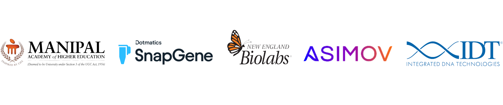

Our team set out to create an educational outreach that can bridge the gap between the scientific community and the general public of all ages. We aim to educate various groups on the impact and importance of the rapidly progressing field of synthetic biology. We want to engage these diverse groups and encourage participation relating to synthetic biology through our workshops and sessions.
We plan to organise various activities and workshops catering to their interests and needs and customised to our target audience. Our educational outreach primarily aims to make synthetic biology more accessible and comprehensible to the general public.
Educational outreach for middle schools, engaging grades 5-8, serves as an opportunity to provide a more extensive and in-depth understanding of the topic. By incorporating quizzes and creating puzzles, the students can engage with the complex topics of synthetic biology in a more palatable fashion. Students can co-relate these new ideas with concepts already being taught in class and thus gather a deeper understanding. Recommending online biology games and experiment simulators is also an engaging way to present new complex information to young minds.
High School and College include some of the most formative years of educational experience. Our objective is to incorporate concepts already being taught in their classes and relate them to synthetic biology and our project relating to Sandalwood Spike Disease. Through conducting various online and offline talks and conducting workshops on different synthetic biology aspects, we hope to expand their knowledge and develop an interest in the field. Producing a video to explain synthetic biology and our project with high school students as our target audience will make the subject more accessible and engaging for the students. University serves as the perfect opportunity for those interested to delve into the world of synthetic biology by engaging in research themselves or collaborating with professors.
One of the most critical aspects of educational outreach for our team is providing education to everyone and making it accessible and affordable to students from all backgrounds. Our efforts include overcoming language barriers and producing pamphlets in different languages for various regions to make information more accessible in different towns and cities. We plan to visit a school for the blind in Bangalore and conduct a workshop on Sandalwood and its importance by highlighting the fragrance and texture of sandalwood in addition to producing audio explaining the project. We would like to visit an NGO for women to explore the idea of the gender gap in various STEM fields, menstruation, the importance of biology, and the opportunities that studying synthetic biology can provide. Overall, our goal is to create a comfortable environment and to empower various groups of people by providing tools and resources to make knowledge more accessible.
SPONSORS
